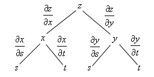

Introduzido em 1873 por William Clifford, os números duais são números da forma
\[ a + b\epsilon \]
Onde $\epsilon^2 = 0$, a adição de dois números duais é definida da forma usual, componente a componente, enquanto a multiplicação é definida por
\[ (a+b\epsilon)(c+d\epsilon) = (a+c)\left((ad + bc)\epsilon\right) \]
Podemos representar um número dual $z = a + b\epsilon$ atráves de um par ordenado $(a,b)$
O que acontece se fizermos a expansão em série de Taylor de uma função avaliada em um número dual? Assumindo que $f(x)$ tenha expansão em série de Taylor, tomando um número dual $z = a + \epsilon$
\[ \begin{align*} f(a + \epsilon) &= f(a) + f'(a)\epsilon + \frac{f''(a)}{2!}\epsilon^2 + \sum_{k=3}^\infty \frac{f^{(k)}(a)}{k!}\epsilon^2 \epsilon^{(k-2)}\\ &= f(a) + f'(a)\epsilon + 0\\ &= f(a) + f'(a)\epsilon \end{align*} \]
Então o par ordenado do número dual para $f(z) = (a, f'(a))$, com isso nós temos uma maneira de encontrar o valor númerico EXATO da derivada de uma função $f$ no ponto $a$ enquanto calculamos a própria função no ponto!!
Vamos criar uma nova estrutura de dados para comportar os números Duais
struct D <: Number v::Float64 ϵ::Float64 end
Um número dual será formado então por duas partes, uma real que acessaremos com v de valor, e uma dual que acessaremos com ϵ. Podemos criar um número dual com o comando
x = D(3.,1.)
Main.##WeaveSandBox#312.D(3.0, 1.0)
Ainda não sabemos operar com os números duais, precisamos criar regras para isso
import Base: +, /, -, *, cos, sin, log, convert, promote_rule +(x::D, y::D) = D(x.v .+ y.v, x.ϵ .+ y.ϵ) -(x::D, y::D) = D(x.v .- y.v, x.ϵ .- y.ϵ) /(x::D, y::D) = D(x.v/y.v, (y.v*x.ϵ - x.v*y.ϵ)/y.ϵ^2) *(x::D, y::D) = D(x.v*y.v, x.ϵ*y.v + x.v*y.ϵ) cos(x::D) = D(cos(x.v), -sin(x.v)*x.ϵ) sin(x::D) = D(sin(x.v), cos(x.v)*x.ϵ) log(x::D) = D(log(x.v), 1/x.v * x.ϵ) convert(::Type{D}, x::Real) = D(x,zero(x)) promote_rule(::Type{D}, ::Type{<:Number}) = D Base.show(io::IO,x::D) = print(io, x.v, " + ", x.ϵ, "ϵ")
Agora sabemos usar todas essas funções com números duais, a última linha é para que possamos printar de maneira mais legível, desta forma agora o print de um número dual fica:
print(x)
3.0 + 1.0ϵ
Agora para saber o valor da derivada de $x^3$ no ponto $x = 4$, basta operarmos o número dual
x = D(4,1) println("x^3 = ", x^3) println("O valor da derivada é ", (x^3).ϵ) print("De forma analitica: (x^3)' = 3x^2, para x = 4 ⟹ 3*(4)^2 = 48")
x^3 = 64.0 + 48.0ϵ O valor da derivada é 48.0 De forma analitica: (x^3)' = 3x^2, para x = 4 ⟹ 3*(4)^2 = 48
Ensinamos ao computador como operar com as operações básica e com as funções cos, sin, log nos duais, o que acontece se tentarmos agora derivar uma expressão mais complicada? Sem ensinar nada sobre regra da cadeia ao nosso sistema de números duais?
\[ g(x) = (\cos(x)+\sin(x^2)) \cdot \log(\sin(3x)) \]
Resolvendo analiticamente, temos como derivada:
\[ g'(x) = \left(-\sin \left(x\right)+\cos \left(x^2\right)\cdot \:2x\right)\log \left(\sin \left(3x\right)\right)+3\cot \left(3x\right)\left(\cos \left(x\right)+\sin \left(x^2\right)\right) \]
Vamos olhar para o valor da derivada em $x = \frac{\pi}{4}$
x = D(π/4,1) g(x::D) = (cos(x) + sin(x^2))*log(sin(3*x)) ∂g(x) = (-sin(x)+cos(x^2)*2*x)*log(sin(3*x))+ 3*cot(3*x)*(cos(x)+sin(x^2)) ## Derivada analitíca println("O valor da derivada analitíca é: ", g(x).ϵ) print("O valor da derivada utilizando números duais é: ", ∂g(π/4))
O valor da derivada analitíca é: -4.055728878490174 O valor da derivada utilizando números duais é: -4.055728878490173
Derivadas de funções $f: \mathbb{R}^n \to \mathbb{R}$ também podem ser calculadas utilizando os números duais. Vamos tomar como exemplo a função $f: \underset{(x,y)}{\mathbb{R}^2} \underset{\mapsto}{\to} \underset{x^2sin(y)}{\mathbb{R}}$ Analiticamente, o gradiente de $f$ fica
\[ \begin{align*} \nabla f &= \left(\frac{\partial f}{\partial x},\frac{\partial f}{\partial y}\right)\\ &= \left(2x sin(y), x^2cos(y)\right) \end{align*} \]
Podemos calcular a derivada parcial de $f$ em relação a $x$ tomando um $y$ fixo e calculando a derivada de $f$ em $x$ da maneira usual isso nos dá uma ideia de como utilizar a álgebra dos Números Duais para calcular as derivadas parciais. Para isso basta usarmos como número Dual apenas a variável de interesse na chamada da função, por exemplo, dada a função $f$, calculamos suas derivadas parciais com
f(x,y) = x^2*sin(y) ∂fDx = f(D(2,1), π/3) ## Derivada parcial de f_x utilizando Duais ∂fDy = f(2, D(π/3,1)) ## Derivada parcial de f_y utilizando Duais println(∂fDx) print(∂fDy)
3.4641016151377544 + 3.4641016151377544ϵ 3.4641016151377544 + 2.0000000000000004ϵ
Podemos comparar os resultados com o resultado analitíco
∂f∂x(x,y) = 2*x*sin(y) ## Derivada parcial de f_x analitica ∂f∂y(x,y) = x^2*cos(y) ## Derivada parcial de f_y analitica println("O vetor gradiente calculado de forma analítica é dado por: ( ", ∂f∂x(2, π/3) ,",",∂f∂y(2,π/3) , ")") println("O vetor gradiente calculado de por números duais é dado por: ( ", ∂fDx.ϵ, ",", ∂fDy.ϵ, ")")
O vetor gradiente calculado de forma analítica é dado por: ( 3.464101615137 7544,2.0000000000000004) O vetor gradiente calculado de por números duais é dado por: ( 3.4641016151 377544,2.0000000000000004)
O principio pode ser generalizado para calcular a matriz jacobiana de funções $\mathbb{R}^n \to \mathbb{R}^m$
h(x,y) = (sin(x)*y, x*cos(y)) A = [[h(D(π/2,1), π/4 )[1].ϵ, h(D(π/2,1), π/4 )[2].ϵ],[h(D(π/2,1), π/4 )[1].ϵ, h(D(π/2,1), π/4 )[2].ϵ]] show(stdout, "text/plain", A)
2-element Array{Array{Float64,1},1}:
[4.8091767343044744e-17, 0.7071067811865476]
[4.8091767343044744e-17, 0.7071067811865476]
Podemos dividir os metódos de calcular computacionalmente derivadas em 4 categorias (Baydin et al. (2018))
Encontrar a fórmula analiticamente e executar o cálculo com o computador;
Derivação númerica atráves de diferenças finitas;
Diferenciação Simbólica, atráves de um SAS (Symbolic Algebra System)
Diferenciação Automática
É importante notar que as 4 categorias estão bem divididas entre si, neste sentido, a Diferenciação Automática NÃO é uma derivação númerica, e também não é uma derivação simbólica, alguns autores trazem um conceito de ser um meio termo entre os dois metódos.
Enquanto a Diferenciação Númerica nos dá o valor númerico da derivada da função em um ponto, ela é um metódo aproximado do cálculo dessas derivadas, baseado na definição assíntotica de derivada.
A Diferenciação Simbólica não introduz erros de truncamento e não é uma aproximação, em um sentido de produzir um valor exato para a derivada, mas traz consigo problemas de que os cálculos e expressões a serem computadas envolvidas no processo crescem exponencialmente, e podem ficar bem complicadas até para uma função aparentemente simples.
No meio temos a Diferenciação Automática, que entrega um valor númerico da derivada no ponto mas não é uma aproximação, é um valor exato. O fato de termos um valor exato da derivada vem da expansão em série de Taylor vista na seção anterior, todos os termos de derivadas de ordem maior que 2 são cancelados pois estão sendo multiplicados por ϵ² = 0
A Diferenciação Automática possui dois metódos principais para o cálculo das derivadas, cada um com suas vantagens e particularidades
Para os próximos exemplos vamos tomar a seguinte função $h: \mathbb{R}^3 \to \mathbb{R}$, avaliada no ponto $\theta = (-1, π/4, 2π)$
\[ \begin{align*} h(x,y,z) &= (x+y)\sin(yz)\\ \frac{\partial h}{\partial x} &= \sin(yz)\\ \frac{\partial h}{\partial y} &= \sin(yz) + z(x+y)\cos(yz)\\ \frac{\partial h}{\partial z} &= (x+y)y\cos(yz)\\ \end{align*} \]
h(x,y,z) = (x+y)*sin(y*z) ∂h∂x(x,y,z) = sin(y*z) ∂h∂y(x,y,z) = sin(y*z)+z*(x+y)*cos(y*z) ∂h∂z(x,y,z) = (x+y)*y*cos(y*z) θ = [-1, π/4, 2*π]
3-element Array{Float64,1}:
-1.0
0.7853981633974483
6.283185307179586
Notação: Quando utilizo subscrito $\epsilon$ em um número dual, quer dizer que estou tomando apenas a parte dual, que acompanha o $\epsilon$, por exemplo: $(2+\epsilon)^2 = 2+4\epsilon$, mas $(2+\epsilon)^2_\epsilon = 4$
Vamos visualizar a função como um grafo computacional, onde o cálculo dos valores da função são divididos em cada etapa Agora podemos pensar em como calcular $\frac{\partial h}{\partial y}$, dado que $h(θ) = w$
\[ \begin{align*} w &= tu\\ &= (x+y)\sin(v)\\ &= (x+y)\sin(yz)\\ \\ w_y &= (t(y)u(y))'\\ &= t'(y)u(y) + t(y)u'(y)\\ &= h(x, y+\epsilon, z)_\epsilon \end{align*} \]
Então usar o metódo Forward AD nada mais é do que avaliar a função no ponto com Números Duais, mas vamos implementar o procedimento de grafo computacional acima para calcular a derivada no ponto $\theta$, e também por números Duais
function ForwardAD(x,y,z, em='x') ## Traço t = x+y v = y*z u = sin(v) w = t*u ## Tangentes if em == 'x' t̄ = 1 v̄ = 0 ū = 0 w̄ = t̄*u elseif em == 'y' t̄ = 1 v̄ = z ū = cos(v)*v̄ w̄ = u + ū*t else t̄ = 0 v̄ = y ū = cos(v)*v̄ w̄ = ū*t end end
ForwardAD (generic function with 2 methods)
E podemos visualizar os resultados
println("Forward implementado manualmente: ∇h = (", ForwardAD(θ..., 'x'),",",ForwardAD(θ..., 'y'),",",ForwardAD(θ..., 'z'),")") println("Forward implementado com Duais: ∇h = (", h(D(-1,1), π/4, 2*π).ϵ,",",h(-1, D(π/4,1), 2*π).ϵ,",",h(-1, π/4, D(2*π,1)).ϵ,")") println("Gradiente calculado analiticamente: ∇h = (", ∂h∂x(θ...),",",∂h∂y(θ...),",",∂h∂z(θ...),")")
Forward implementado manualmente: ∇h = (-0.9753679720836315,-1.272799766223 79,-0.03717897426751981) Forward implementado com Duais: ∇h = (-0.9753679720836315,-1.27279976622379 ,-0.03717897426751981) Gradiente calculado analiticamente: ∇h = (-0.9753679720836315,-1.2727997662 2379,-0.03717897426751981)
Vamos agora olhar para o outro metódo de Diferenciação Automática, o metódo reverso, que nada mais é do que a aplicação da regra da cadeia multivariável.
Vamos olhar para o diagrama da regra da cadeia de uma função $z(x(s,t),y(s,t))$

Para calcular as derivadas parciais de $z$ em relação a $s,t$, podemos vir "descendo" a árvore multiplicando as derivadas que estão no mesmo caminho, se alguma variável alvo aparece em dois "ramos" diferentes da árvore, somamos os ramos ao final, ficando então:
\[ \begin{align*} \frac{\partial z}{\partial s} &= \frac{\partial z}{\partial x}\frac{\partial x}{\partial s} + \frac{\partial z}{\partial y}\frac{\partial y}{\partial s}\\ \frac{\partial z}{\partial t} &= \frac{\partial z}{\partial x}\frac{\partial x}{\partial t} + \frac{\partial z}{\partial y}\frac{\partial y}{\partial t} \end{align*} \]
Se você entendeu o processo de cálculo das derivadas parciais de $z$ atráves desta árvore, você entendeu o modo reverso da Diferenciação Automática!!
Há dois passos para o cálculo das derivadas pelo metódo reverso, o primeiro é chamado de Forward Pass, que é avaliar a função atráves do grafo computacional visto na seção sobre Forward AD, e com isso teremos as variáveis do traço da mesma maneira, mas ao invés de calcular as tangentes, que seriam as derivadas de cada variável do traço em relação às variáveis de entrada, calculamos agora o adjunto, que é a derivada da função em razão de variável do traço. Nesse sentido temos
| Traço | Adjunto |
|---|---|
| $t = x+y$ | $\bar{w}=\frac{\partial w}{\partial w}=1$ |
| $v=yz$ | $\bar{u}=\frac{\partial w}{\partial u}\bar{w}$ |
| $u=sin(v)$ | $\bar{v}=\frac{\partial u}{\partial v}\bar{u}$ |
| $w = tu$ | $\bar{t} = \frac{\partial w}{\partial t}\bar{w}$ |
| $\bar{x} = \frac{\partial t}{\partial x}\bar{t} = \frac{\partial w}{\partial x}$ | |
| $\bar{y} = \frac{\partial t}{\partial y}\bar{t}+\frac{\partial v}{\partial y}\bar{v} = \frac{\partial w}{\partial y}$ | |
| $\bar{z} = \frac{\partial v}{\partial z}\bar{v} = \frac{\partial w}{\partial z}$ |
Perceba que as variáveis adjuntas nos dão um sistema a ser resolvido! Podemos então montar a seguinte matriz
\[ A = \left[\begin{array}{ccccccc} 1 & 0 & 0 & 0 & 0 & 0 & 0 \\ -\frac{\partial w}{\partial u} & 1 & 0 & 0 & 0 & 0 & 0 \\ 0 & -\frac{\partial u}{\partial v} & 1 & 0 & 0 & 0 & 0 \\ -\frac{\partial w}{\partial t} & 0 & 0 & 1 & 0 & 0 & 0 \\ 0 & 0 & 0 & -\frac{\partial t}{\partial x} & 1 & 0 & 0 \\ 0 & 0 & -\frac{\partial v}{\partial y} & -\frac{\partial t}{\partial y} & 0 & 1 & 0 \\ 0 & 0 & -\frac{\partial v}{\partial z} & 0 & 0 & 0 & 1 \end{array}\right], X = \left[\begin{array}{c} \bar{w} \\ \bar{u} \\ \bar{v} \\ \bar{t} \\ \bar{x} \\ \bar{y} \\ \bar{z} \end{array}\right] \]
Perceba que este sistema nos dá
\[ AX = \left[\begin{array}{ccccccc} 1&0&0&0&0&0&0 \end{array}\right]^t \]
Como a matriz é triangular, é bem fácil resolvermos e as últimas componentes do vetor $X$ serão o vetor gradiente que estamos em busca. Basta então calcular as derivadas intermediárias, podem ser calculadas a mão, ou utilizando números duais, vamos escrever a função que faz o Reverse AD para calcular $\nabla h(x,y,z)$
using LinearAlgebra function ReverseAD(x,y,z) ## Traço tx = D(x,1) + y ty = x + D(y,1) vy = D(y,1)*z vz = y*D(z,1) u = sin(D(vy.v,1)) wu = tx.v*D(u.v,1) wt = D(tx.v,1)*u.v ∂w∂u = wu.ϵ ∂u∂v = u.ϵ ∂w∂t = wt.ϵ ∂t∂x = tx.ϵ ∂t∂y = ty.ϵ ∂v∂y = vy.ϵ ∂v∂z = vz.ϵ A = zeros(7,7) + I A[2,1] = -∂w∂u A[3,2] = -∂u∂v A[4,1] = -∂w∂t A[5,4] = -∂t∂x A[6,3] = -∂v∂y A[6,4] = -∂t∂y A[7,3] = -∂v∂z b = zeros(7) b[1] = 1 X = A\b return X[end-2:end] end
ReverseAD (generic function with 1 method)
Calculando em $\theta$
println("∇h(θ) = ", ReverseAD(θ...))
∇h(θ) = [-0.9753679720836315, -1.27279976622379, -0.03717897426751981]
Há outras maneiras de implementar o Reverse AD, está é uma das mais fáceis, e apresentado em [Austin]. Note que implementar o metódo reverso para um caso geral é muito mais complicado do que o metódo direto. Todos estes metódos estão implementados no Julia atráves das mais diversas bibliotecas: ForwardDiff.jl, ReverseDiff.jl, DualNumbers.jl e também nas biblitecas de Redes Neurais e Otimização da sua linguagem favorita.
Vamos pensar na matriz Jacobiana de uma função $f: \mathbb{R}^n \to \mathbb{R}^m$
\[ J_f = \begin{bmatrix} \frac{\partial f_1}{\partial x_1} & \dots & \frac{\partial f_1}{\partial x_n}\\ \vdots & \ddots & \vdots \\ \frac{\partial f_m}{\partial x_1} & \dots & \frac{\partial f_m}{\partial x_n}\\ \end{bmatrix} \]
Efetuar um "passo" do Forward AD em uma variável $x_k$ irá nos retornar
\[ f(x_1, \dots, x_k + \epsilon, \dots, x_n) = (f_1, \dots, f_m) + \left(\frac{\partial f_1}{\partial x_k}, \dots, \frac{\partial f_m}{\partial x_k}\right)\epsilon \]
Onde a parte associada ao número Dual é justamente uma coluna da matriz jacobiana, então para calcular toda a matriz seria preciso repetir a operação $n$ vezes. Seja $ops(f)$ o custo computacional/de operações para o cálculo de $f$, e $c > 0$, temos que o custo do metódo Forward AD é $n\cdot c \cdot ops(f)$ ([Baydin]). Isso nos dá uma ideia de que o metódo pode ser bom para funções $\mathbb{R}^n \to \mathbb{R}^m$ com $n \ll m$
No metódo Reverse AD quando calculamos um passo estamos calculando a derivada de uma função em relação à todas as variáveis de uma vez, nesse sentido:
\[ \begin{align*} f(x_1, \dots, x_n) &= (f_1, \dots, f_m)\\ &\text{Cada passo do Reverse AD irá calcular}\\ \nabla f_k &= \left(\frac{\partial f_k}{\partial x_1}, \dots, \frac{\partial f_k}{\partial x_n}\right) \end{align*} \]
Então calculamos uma linha inteira da matriz Jacobiana, nesse sentido temos que o custo do metódo reverseAD é $m\cdot c \cdot ops(f)$ ([Baydin]). Isso nos dá uma ideia de que o metódo pode ser bom para funções $\mathbb{R}^n \to \mathbb{R}^m$ com $m \ll n$
Em particular, estamos interessados no modo reverso para funções de erro que são do tipo $\mathbb{R} \to \mathbb{R}^m$ que é utilizado em sua principal aplicação: Cálculo das derivadas para aprendizado com Gradiente Descendente
O algoritmo de Backpropagation é um caso particular do modo de Diferenciação Automática Reverso quando aplicado a uma rede neural. No Backpropagation estamos interessados em calcular o gradiente de uma função $\mathbb{R}^n \to \mathbb{R}$ geralmente chamada de função perda, em razão dos parâmetros da rede neural (pesos e vieses)
Rojas, Raul (1996). Neural Networks - A Systematic Introduction, Springer
Michael A. Nielsen (2015), Neural Networks and Deep Learning, Determination Press
Atilim Gunes Baydin et al. (2018), Automatic Differentiation in Machine Learning: a Survey, JMLR
Rackauckas, Chris (2020). Forward-Mode Automatic Differentiation (AD) via High Dimensional Algebras